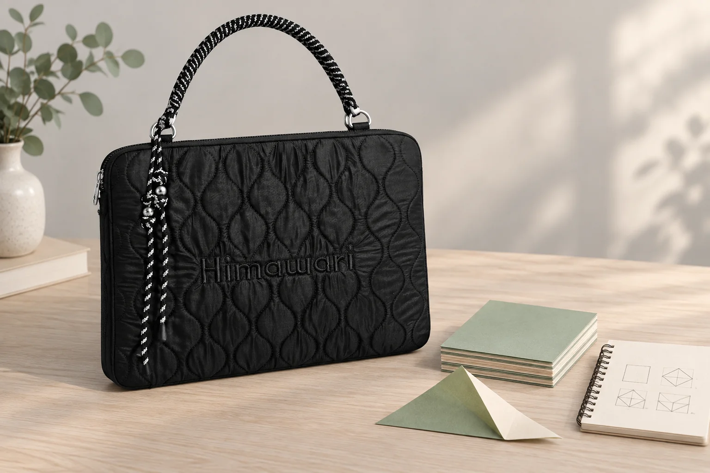

종이접기 모임에 가는 날: 첫 면과 방향을 한 장에 남기기

집에서는 접었던 모양인데 모임 자리에서는 색이 반대쪽으로 나옵니다. 양면 색이 다른 종이를 쓰거나 중간에 종이를 돌렸다면 처음 펼쳐 놓은 방향부터 비교해보세요. 새 종이를 여러 장 꺼내기 전에, 한 장으로 연습하며 시작 면과 멈춘 단계를 남길 수 있습니다.
첫 칸에는 펼친 종이의 모습을 적습니다
따라 보는 책의 작품 이름과 페이지, 또는 본인이 만든 순서도의 이름을 적어둡니다. 종이 크기와 위로 향한 면의 색도 함께 남기세요. 무늬가 있는 종이라면 무늬의 윗부분이 어느 쪽인지 짧게 그려두면 됩니다. 종이 양면의 색이 같을 때는 연습지에 놓인 방향을 작은 네모로 표시해봅니다. 작품마다 시작 조건이 다르므로 사용하는 도안의 설명을 먼저 확인하세요.
종이를 돌린 순간을 접는 단계와 나눕니다
접은 선이 늘어났는지와 종이 전체를 돌렸는지는 다른 동작입니다. 연습하다 종이를 돌리거나 뒤집었다면 해당 단계 옆에 그 동작을 적어둡니다. 다음 그림과 방향이 맞지 않을 때는 접힌 모양만 보지 말고, 바로 앞에서 종이를 어떻게 놓았는지도 비교하세요. 도안의 기호를 아직 이해하지 못했다면 본인이 아는 말로 질문을 적어 모임에서 확인합니다.
막힌 단계에는 두 가지 상태를 함께 남깁니다
마지막으로 맞게 따라갔다고 생각한 단계 번호와, 다음에 어려웠던 동작을 구분해 적습니다. 종이를 모두 펴기 전에 지금의 앞면과 뒷면을 스스로 확인해보세요. 사진을 기록한다면 자신의 연습 종이만 담고, 다른 사람의 작품이나 도안 전체를 함께 찍을 때는 허락을 구합니다. 완성 모양만 남기기보다 어느 지점에서 방향이 달라졌는지 찾을 단서를 남기는 연습입니다.
다음 모임에서는 새 종이로 기록을 확인합니다
연습지를 보며 같은 크기의 새 종이를 같은 면부터 놓아봅니다. 수정한 단계에는 날짜를 적고, 아직 확인하지 못한 질문은 지우지 않고 남겨둡니다. 사진의 No.2513 블랙은 가로 36.5 × 세로 28 × 폭 2cm의 노트북 파우치입니다. 연습 종이와 기록지는 별도 소품이며, 접힌 입체 작품을 담거나 눌림 없이 보관할 수 있다는 수납 시험을 한 것은 아닙니다. 작품은 모양에 맞는 별도 운반 방법을 정합니다.
참고·안내
- Himawari No.2513 제품 정보
- 실제 Himawari No.2513 블랙 원본과 카탈로그 치수를 참조한 AI 연출 사진입니다. 종이와 필기구는 별도 소품이며 수납 시험이나 실제 고객 기록이 아닙니다.
자주 묻는 질문
종이에 직접 번호를 써야 하나요?
작품에 표시를 남기고 싶지 않다면 별도 연습지에 단계와 방향을 적어보세요. 본인의 연습용 종이에 표시할 때도 시작 면을 구분할 수 있게 남깁니다.
완성 모양이 다르면 처음부터 모두 다시 접어야 하나요?
먼저 마지막으로 맞았던 단계와 종이를 돌리거나 뒤집은 기록을 비교합니다. 도안에서 이해하지 못한 동작은 모임에서 확인하고 새 종이로 연습할 수 있습니다.